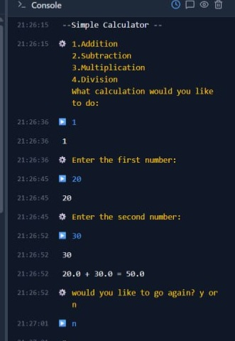
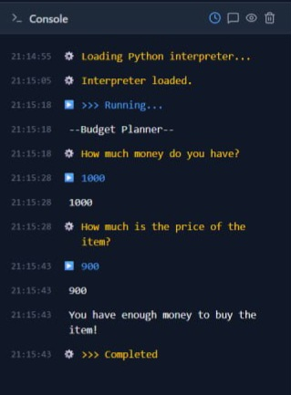

Simple Calculator

A calculator that adds, subtracts, multiplies and divides.
Watch the demo
Technologies used:
- Python
- pytogether.org
| Project | Language | Year | Link |
|---|---|---|---|
| Simple Calculator | Python | 2025 | View Details |
| Simple Budget Planner | Python | 2026 | View Details |
| Total projects | 3 | ||

A calculator that adds, subtracts, multiplies and divides.
Technologies used:

A python program that makes sure we have enough budget to buy certain things.
Technologies used: